Copyright © 2026 United Security Providers AG
This document is protected by copyright under the applicable laws and international treaties. No part of this document may be reproduced in any form and distributed to third parties by any means without prior written authorization of United Security Providers AG.
DOCUMENTATION IS PROVIDED "AS IS" AND ALL EXPRESSED OR IMPLIED REPRESENTATIONS AND WARRANTIES, INCLUDING BUT NOT LIMITED TO ANY IMPLIED WARRANTY OF MERCHANTABILITY, FITNESS FOR A PARTICULAR PURPOSE OR NON-INFRINGEMENT, ARE DISCLAIMED TO THE EXTENT PERMISSIBLE UNDER THE APPLICABLE LAWS.
Table of Contents
List of Figures
List of Tables
The USP Secure Entry Server® appliance is a web application firewall acting as a reverse proxy with authentication and user management capability and is installed within the neighborhood of one or more target web servers.
All connections coming from the Internet addressed to one of the web servers are protected by the USP Secure Entry Server® appliance, which passes the requests on to the main web servers.
This guide gives a brief overview of the USP Secure Entry Server® appliance and its component. It describes the basic installation and configuration steps as well as how to operate the USP Secure Entry Server® appliance according to configuration changes, monitoring, log data analysis and more.
The document is intended for system administrators of the USP Secure Entry Server® appliance.
Table 1.1. Glossary
| Term | Definition |
|---|---|
SES | USP Secure Entry Server®, the entire software suite, including the Web Application Firewall, the Authentication Service and the Administration Web GUI. |
WAF | Web Application Firewall, the entire web application firewall part of the SES. It acts as reverse proxy and consists of the three components "HTTP Listener" (HTL), "HTTPS Listener" (HTS) and "SRManager" (SRM). The composition of these components is technically called HSP. |
HSP | HTTP Secure Proxy, the technical name of the WAF. |
HTL | WAF HTTP Listener, the HTTP listener component of the web application firewall. |
HTS | WAF HTTPS Listener, the HTTPS listener component of the web application firewall. |
SRM | WAF Request Manager, the session management component of the web application firewall. |
SLS | Secure Login Service, the technical name of the Authentication Service component that is responsible for authenticating and authorizing end-users. |
IDM | Identity Manager, lean turn-key ready user management system with integrated user administration frontend and directory provisioning capabilities. |
Target server | An application backend server which is the actual target of an incoming HTTP request. |
This chapter gives an overview of the different appliance platforms and setups of the USP Secure Entry Server® appliance.
There are two main appliances platforms: hardware appliance and virtual appliance.
The USP Secure Entry Server ® appliance provides support for using both free and commercial GeoIP databases by MaxMind. The free "GeoLite" databases are provided under the so-called "Creative Commons License":
The details of the MaxMind licensing can be reviewed on their own website:
The hardware appliance has a standard rack size form factor. Besides the common ports, the appliance offers four network interfaces. See Interface Roles section for details how these interfaces are used. To prevent service failures, the appliance supports redundant power-supplies and mirrored hard disks (RAID 1).
The USP Secure Entry Server® can run as a virtual appliance. The functionality does not differ to the hardware appliance, except that the hardware settings can be individually adjusted to the expected needs.
The following settings are recommended for a moderate system usage:
| Parameter | Minimal | Recommended |
|---|---|---|
CPU cores | 2 | 8 |
RAM | 8 GB | 32 GB |
Disk size | 40 GB | 300 GB |
Network interfaces | 2 | 3 |
If the virtualization software allows to define a guest operation platform, a 64bit architecture with Linux Kernel 4.X should be used.
The RAM requirements may vary considerably depending on the number of applications and concurrent users.
With the minimal configuration the performance as well as the usage of different features is very limited and is not recommended for production.
The supported virtualization solutions are:
The USP Secure Entry Server® appliance is commonly run as a multi-homed server. This means that the USP Secure Entry Server® appliance requires at least two separate network interfaces being connected to your routers/switches/firewalls in order to be used. Each network interface has a certain role which implies some restrictions.
|
Local interface |
The local (or console) interface is used to connect a local administrative workstation to the USP Secure Entry Server® appliance.
The workstation may be connected using a crossed Ethernet cable. This interface is used for the initial network configuration when setting up a new USP Secure Entry Server® appliance.
By default the interface has the IP addresses |
The local interface features a DHCP server which is enabled by default. The DHCP service is used to provide your administrative workstation with an IP address in order to connect to the Administrator Web GUI. Never connect this interface to the internal area network since the DHCP server may seriously disturb other systems connected to this network.
|
External interface |
The external interface is connected to the inbound firewall (client/external network). This interface becomes the IP address which is going to be accessible from the client network, typically the Internet. Multiple IP addresses may be assigned to this interface, one for each host, but all these addresses must be within the same network segment. See section Hosts about configuring new hosts. The default route is always set to the gateway connected to this interface. |
|
Internal interface |
The internal (or intranet) interface provides connectivity to the network of target servers. Requests to target servers are always sent via this interface. You can also access the Web GUI for Administration via this interface on port 443 or 8443 (HTTPS). |
|
Administration interface |
The administration (or operator) interface is optional and may be connected to a separate network for operational purposes (access to the Web GUI of the USP Secure Entry Server® appliance only). |
When the administrator interface is enabled, access to the Web GUI via the internal interface is not possible anymore.
During operation the external interface and the internal interface are mandatory and must be connected to your network.
It is possible to run the appliance in Authentication Service or Identity Manager Standalone mode. If enabled, the WAF and other service features are disabled and only the respective service is running. This setups requires at least two interface, else the Cloud Appliance mode will be enabled(Cloud Appliance). Only the internal interface needs to be connected to the network during operation.
See Setup Authentication Service Standalone Mode section for further information how to enable e.g the Authentication Service Standalone mode. Identity Manager Standalone can be setup in the same way.
United Security Providers provides the necessary machine images to instantiate a virtual cloud appliance.
The main difference to the other setups is that only one network interface is available. The IP Address is automatically assigned by the cloud service and the administration Web GUI can only be accessed on port 8443.
The USP Secure Entry Server® appliance High Availability (HA) and Session Transfer facility offers two different setups:
This High Availability setup allows a failover between two appliances.
This High Availability setup allows load distribution and failover between two or more appliances.
This guide is intended if you want to install a SES appliance on a virtual environment or with a SES Hardware Appliance. It also serves for quick installation for SES testing purposes or for a SES demo environment.
See section Connecting the Hardware Appliance if you have a SES Hardware Appliance.
Do not start the Virtual Machine and bootable SES ISO image using only one network interface, otherwise the SES appliance will boot in cloud mode and would not be usable.
Prerequisites:
see also Appliance User Guide - section Appliance Platforms
| Parameter | Minimal | Recommended |
|---|---|---|
CPU cores | 2 | 8 |
RAM | 8 GB | 32 GB |
Disk size | 40 GB | 300 GB |
Network interfaces | 2 | 3 |
Do NOT start the newly created VM before all network adapters have been properly set up as described in the following chapter, otherwise the SES appliance will boot in cloud mode and would not be usable.
Start the Hypervisor application, but IMPORTANT leave the Virtual Machine powered off. It is absolutely necessary to add additional Network adapters.
Select the Virtual Machine and add or edit the Network Adapters as below as example:
Admin Network Adapter
Internal Network Adapter
External Networt Adapter
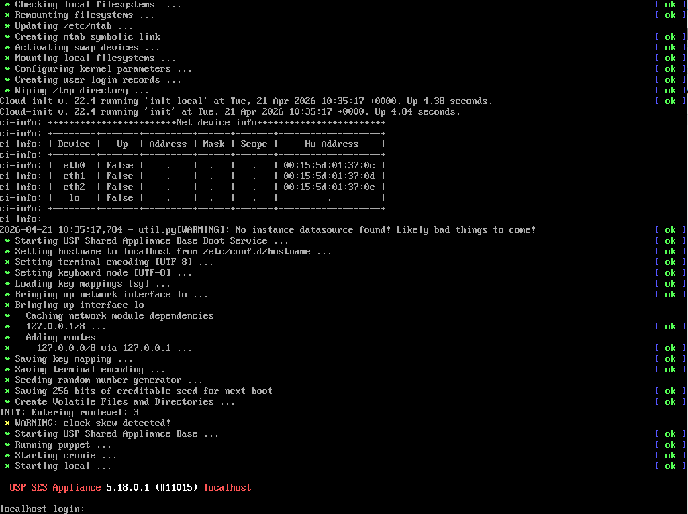 |
Log in on the Virtual Machine console with the credential below:
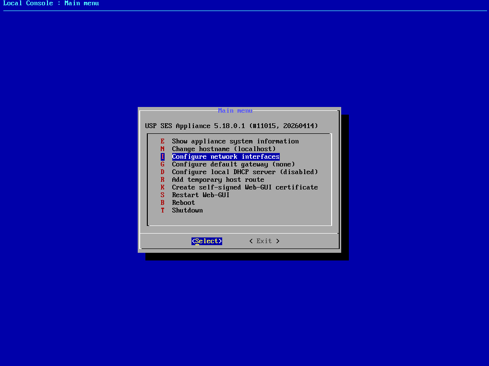 |
The console menu provides a variety of options to configure basic USP SES Appliance settings. Here you will see the three connected network interfaces. We will now configure the admin interface. Afterward, we should be able to access the SES Admin WebGUI.
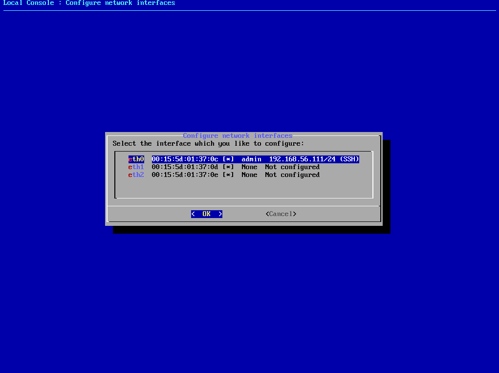 |
Repeat these steps for the other two adapters (Internal Network, External Network). However, only the configured "admin" interface requires the "ssh" flag.
Login to SES Admin WebGUI
Login with the Admin WebGUI default credential:
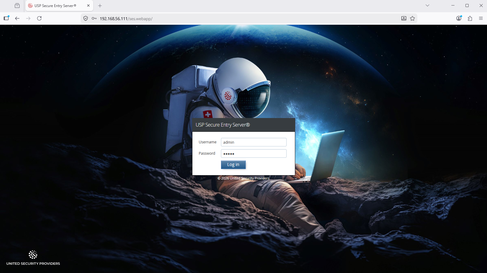 |
After the first login, the password of the "admin" user shoud immediately be changed to a secure new value:
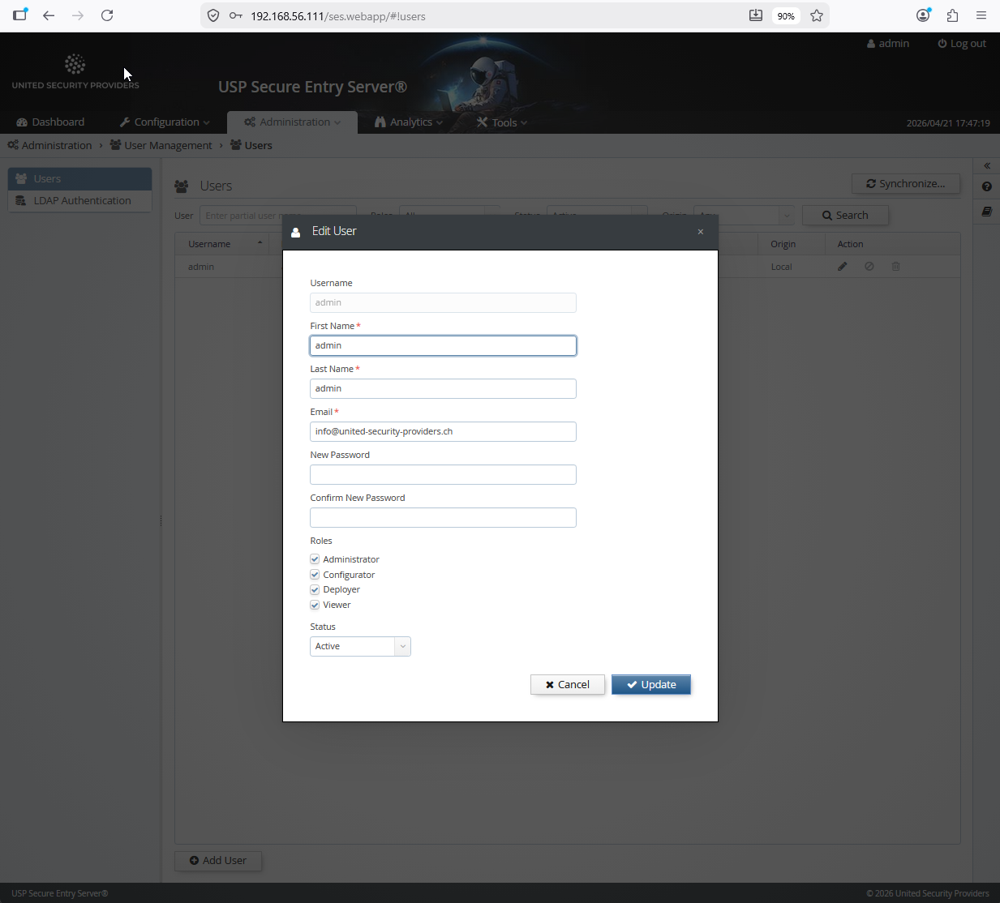 |
IMPORTANT: Map the network interfaces to the right MAC adresses, but at least the "Admin Network Adapter" otherwise you lose the connection over the browser to the Admin WebGUI.
Configure the WAF IP addresses below an example:
External (Internet or DMZ Network)
Intranet (Application or Backend Server Network)
Administrator (Management or Operator Network)
Gateway: 192.168.56.1
If you have done it correctly, access to the SES Admin GUI e.g. https://192.168.56.111 should still be possible after activation.
For the installation, at least the external and the internal interface must be connected to the network. For the initial setup, the local interface can be connected to the operator workstation with an Ethernet crossover cable.
The interface roles are per default assigned according to the order of the MAC addresses which corresponds with the physical location of the network cards on the system board. Starting with the lowest being the local interface, followed by external interface, internal interface, administration interface. Looking at the backside of the hardware appliance, the furthest interface to the left is the local interface.
The interface roles assignment can be changed after the initial setup when configuring the appliance with the Web GUI.
The provided installation media contains an auto-installer for USP Secure Entry Server®. To install the software, boot the appliance from the install media (USB Stick) and start the auto-installer. No user interaction will be required. After finishing the installation, the appliance will reboot automatically and start up the USP Secure Entry Server® appliance.
When the operator workstation is connected to the local interface with an Ethernet cross-over cable, the Administration Web GUI can be accessed with a browser by navigating to the address https://192.168.0.1 or fd12:3:4:5::. The operator workstation will automatically receive an IP address from the local DHCP server running on this interface.
The default user is "admin" with password "admin". Change the default password after you have logged in! See section User Management about managing administrative roles.
If the USP Secure Entry Server® appliance can’t be accessed via the local interface, see section Console Menu how to initially setup the network interfaces without Administration Web GUI access.
After the initial setup, the Administration Web GUI can be access via the internal interface or the administration interface, and always via the local interface. When successfully logged into Web GUI, the first step is the configuration of the network interfaces. See Network Settings Setup for further details. <<<
The USP Secure Entry Server® is the only system directly accessible and visible from the Internet. All other infrastructure components are hidden behind it. To be able to safeguard application servers and infrastructure elements, all communication terminates on the USP Secure Entry Server®. It establishes connections to the inner side to the target server on behalf of the clients.
The USP Secure Entry Server® system and component configuration. All these are included in the configuration lifecycle.
Different administration tasks. This view is only accessible for users with Administration user role.
A simple Console Menu that allows to prepare the initial access to the Web GUI. It can be started having direct access to USP Secure Entry Server® local console and log in using the user "console" with the password "console".
Table 5.1. Console Menu Commands
| Command Key | Description |
|---|---|
E | Shows different appliance system information, like release information, current network interface and IP address settings or routing table |
N | Sets the hostname of the appliance temporarily. |
I | Sets the network interface roles and IP address settings temporarily. |
G | Sets the default gateway temporarily. |
D | Stops or starts the DHCP server. The status change is persistent (reboot). |
R | Adds a temporary route to a server. The entry gets deleted at server reboot. |
K | Creates a self signed x509 certificate for the Web front-end using the servers machine name. |
S | Restarts the Web GUI. |
B | Reboots the appliance |
T | Shutdown the appliance |
Configuring the USP Secure Entry Server® involves several steps. All configuration files are under revision control, which allows to have a change history, as well as the possibility to rollback the configuration to any previous state. The configuration needs to be explicitly activated before the components will apply it, so service interruptions due to required restarts of the Web Application Firewall or Authentication Service components can be planned in advance.
Whenever one or more configuration parameters in the "System Settings", "Web Application Firewall", "Authentication Service" or "Identity Manager" section are changed, it is necessary to commit these changes. A "Commit" button will be displayed in the navigation sidebar, taking the user to the commit screen where a review of the changes to the configuration files is possible. Every commit requires a commit message, describing what has been changed, which is then added to the change history.
The current configuration can be tested for issues (e.g. invalid security certificates, misconfigured custom commands) by clicking on the Test button in the Configuration Deployment screen (Configuration→Manage and deploy). This will deploy the configuration to a temporary directory structure, and start the services in test mode.
The Configuration Deployment screen will also show warnings about obvious configuration issues. Clicking on an entry will open the related screen where the issue can be fixed.
Configuration activation is only possible if there are no uncommitted changes. To activate the current configuration, go to Configuration→Manage and deploy→Configuration Deployment screen and click on the Activate button. The activation process takes a while, as some serviced might require a restart or a reload. Services, whose configuration has not been changed, will not be restarted.
Sometimes, the activation will perform a restart of the web GUI, for example if the internal or administrative IP address has been changed. In that case, it may be necessary to reconnect to the web GUI manually after a while.
If the USP Secure Entry Server® is set up as a High Availability cluster, the configuration needs to be synchronized to the other node(s) after activation. A Synchronize button will be displayed in the Configuration Deployment screen which starts the synchronization process. <<<
This chapter should give a brief overview of how to setup the different parts of the USP Secure Entry Server® appliance.
Detailed information about different settings and application integration are provided in the help within the Web GUI, the component Administration Guides or in the USP Customer Knowledge Base.
To run the USP Secure Entry Server® appliance, some basic network settings are required. Otherwise it will not be possible to set and deploy any component configuration.
All these settings are located in Configuration→System Settings→Network Settings.
The appliance host name helps to identify the appliance. The configuration field is located in the tab System.
In the Interface tab, the network interface assignment as well as the IP addresses for all operational interfaces can be set.
Network Interface Roles
The roles are usually preset correctly, but can be changed if necessary. The external and internal interface roles must have an assignment (except in Standalone Appliance mode, where the external interface is not used).
Internal IP Address
An IP address for the internal interface is required. An additional gateway is optional and only needed when the target servers are not in the same subnet. It is possible to specify either an IPv4 address, an IPv6 address, or both.
Administrator Interface
This interface is not in use per default. It can be enabled by checking the Enable interface checkbox and entering the IP address information. It is possible to specify either an IPv4 address, an IPv6 address, or both.
When the administrator interface is enabled, access to the Web GUI via the internal interface is not possible anymore. After activation of the configuration, the operator must connect again to the Web GUI using the administration interface IP address.
Using an NTP (Network Time Protocol) server is recommended. Especially when having a High Availability cluster. The setting is located in the tab Network Services.
Multiple NTP servers can be specified for redundancy. It is possible to use both IP addresses (IPv4 and IPv6) or hostnames.
Using an (internal) DNS (Domain Name System) server is recommended when backend systems are configured to use hostnames. The setting is located in the tab Network Services.
Multiple DNS servers can be specified for redundancy. It is possible to define IPv4 and IPv6 addresses for DNS servers.
Use DNS Servers with extra caution because of possible DNS attacks.
Depending on the network setup, special routing settings are required. For each target server, an automatic route will be created using the internal interface. Manually added routes can overwrite the automatically created routes. These will be marked accordingly.
Be cautious when adding manual routes. If misconfigured, it can lead to improper functioning of the USP Secure Entry Server® and even preventing operators from accessing the Web GUI. <<< === Web Application Firewall Setup
The Web Application Firewall configuration has a hierarchic structure and is divided in the three sections:
To serve any request via USP Secure Entry Server® a virtual host must be created.
Create a new virtual host by pressing the button "Add virtual host" in the Configuration→Web Application Firewall→General Settings view.
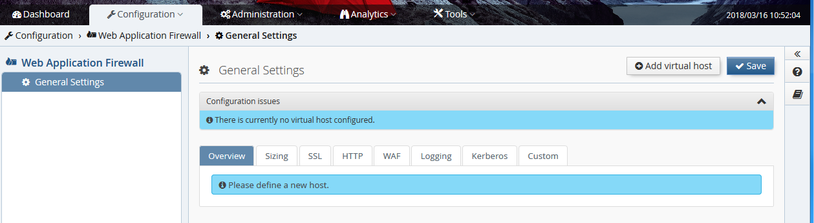
Enter the virtual host details.
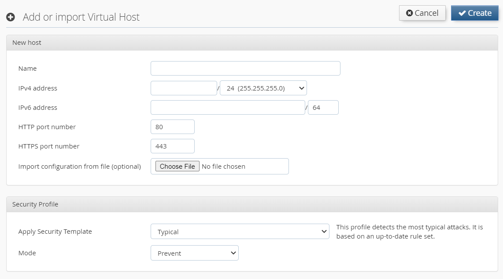 |
In this step it is also possible to import a configuration of another virtual host which was previously exported, for instance from another USP Secure Entry Server®. The Security Profile enables protection against certain attack patterns (XSS, SQL injection). You can choose to block such attacks by selecting the Mode "Prevent" or just to log it using "Detect".
Each virtual host must have SSL certificates. After the virtual host is created the SSL (server) certificate and the CA certificate chain must be added in the SSL tab of the virtual host configuration. Select the certificate from the corresponding drop-down menu.
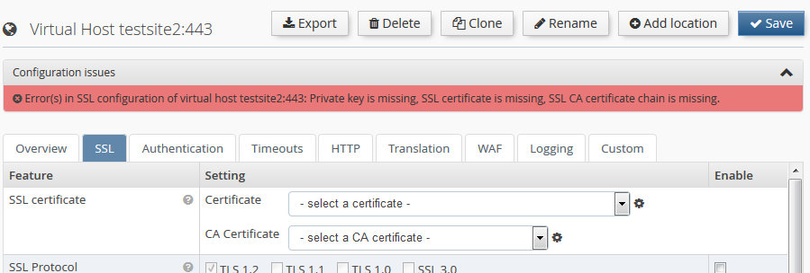 |
If new certificates must be created, change to the "Certificates and Keys" screen, either by clicking on the corresponding menu entry to the left, or by clicking the small icon next to the certificate selection drop-down box.
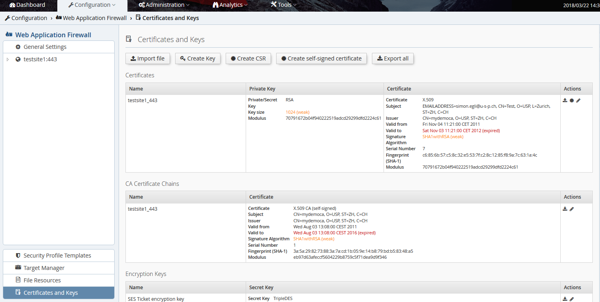 |
This screen also shows warnings related to expired certificates, weak keys etc. The certificates and keys can be generated offline and imported as PEM encoded files. The files must be selected and uploaded by clicking the Import file button.
Alternatively, the private key can be generated by the USP Secure Entry Server® appliance. Creating a new private key and certificate consists of the following steps:
Alternatively, you may also create and use self-signed certificates, which is usually very useful in testing environments. To generate such certificates, click the Create self-signed certificate button at the top.
Key files are exported via the backup function, and optionally also with the configuration export function. The backup will always contain the keys, while the export will only contain them if the checkbox "Include private keys" has been checked.
For each virtual host at least one location must be created as otherwise no target server can be served.
Create a new location by pressing the button Add location in the virtual host view.
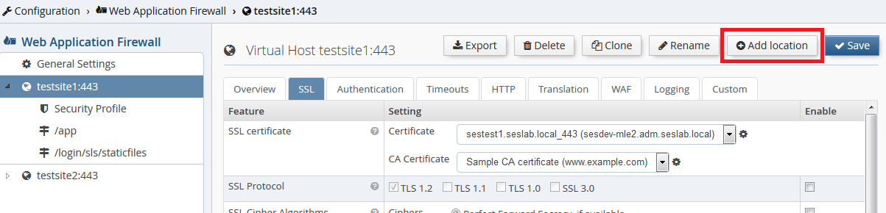
The location name matches the request path. The name must start with /, e.g. /web/application.
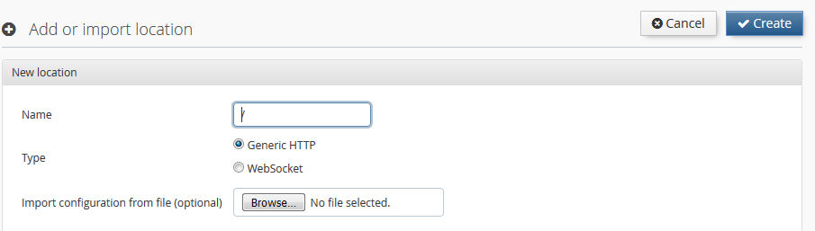 |
Each location must define a target server to which the requests are forwarded to. The target server, which must be already defined in the Target Manager, can be selected from the drop-down list. The target manager can be accessed either via the "Target Manager" menu item in the WAF view or by clicking icon next to the drop-down list.
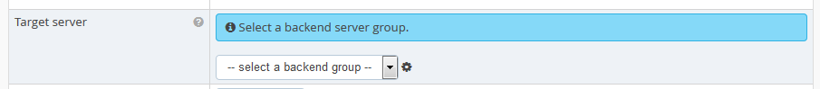 |
Authentication is by default enabled for any new location and can be adjusted with the "Access Area" drop-down list. See Access Area for more details about the different authentication levels.
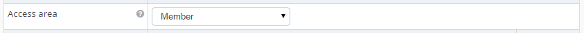 |
Access to the location is by default only possible using HTTPS protocol. It is possible to switch to HTTP only or using both.
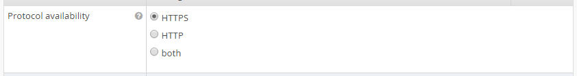 |
Some locations are predefined by the USP Secure Entry Server® appliance and can not be changed or should not additionally created by the user.
Every virtual host has a Security Profile which defines the active rules to detect potential attacks. You can change the Security Profile by either applying a template or by customizing the settings manually.
Mode: The mode defines the actions to be taken when the profile is applied to traffic:
| Mode | Description |
|---|---|
Prevent | This will block traffic that is identified as suspicious by the Security Profile. |
Detect | Identified suspicious traffic is logged, but no blocking will occur. |
Off | Traffic is not verified with respect to the Security Profile settings. |
Profile Settings: The profile settings can be edited by clicking on "Settings" in the "Profile" menu. Depending on whether your profile is based on "Lean" or on "Typical/Fully Fledged", the following settings are at your disposal:
This type of profile is based on the rules which were shipped prior to USP Secure Entry Server® 5.2.
Request Rules: Every rule in this profile checks requests for a certain type of attack. You can enable or disable any of the rules. If the current mode is "Prevent" and an enabled rule detects an anomaly, the affected request is blocked. If a rule is disabled, it won’t log nor block any suspicious requests.
Access Request Body: Allows to choose whether to apply rules to request bodies or not. Please be aware that if this setting is disabled, POST parameters and other content submitted in the request body will not be inspected.
Inspect Size Limit: This puts a limit on inspecting request bodies. It is used to keep the processing load on an acceptable level. A higher limit will consume more processing time. Request bodies which are larger than this value will still be inspected, but only up to this limit. The limit can be specified in bytes (B), kilobytes (kB), megabytes (MB) or gigabytes (GB).
Parse JSON: Enabling JSON parsing will apply the rules to JSON payloads.
Validate JSON Syntax: This is a special rule which checks the syntax of JSON requests. If the syntax is invalid and the current mode is "Prevent", then such requests are blocked.
This type of profile comes with an enhanced, accurate rule set which was designed to detect and prevent today’s sophisticated web attacks.
Enforcement: Enforcement defines how strictly suspicious requests will be blocked. This has only an effect if the mode is set to "Prevent". The enforcement levels behave as follows:
| Level | Description |
|---|---|
Tight: 5 | Requests with one or more critical anomalies will be blocked |
4 | Requests with 2 or more critical anomalies will be blocked |
3 | Requests with 3 or more critical anomalies will be blocked |
2 | Requests with 5 or more critical anomalies will be blocked |
Loose: 1 | Requests with 10 or more critical anomalies will be blocked |
Request Rules: Request rules are organized in categories. Enabling or disabling a category will enable or disable all rules contained within.
Access Request Body: Allows to choose whether to apply rules to request bodies or not. Please be aware that if this setting is disabled, POST parameters and other content submitted in the request body will not be inspected.
Inspect Size Limit: This puts a limit on inspecting request bodies. It is used to keep the processing load on an acceptable level. A higher limit will consume more processing time. Request bodies which are larger than this value will still be inspected, but only up to this limit. The limit can be specified in bytes (B), kilobytes (kB), megabytes (MB) or gigabytes (GB).
Parse XML: Enabling XML parsing will apply the rules to XML payloads.
Parse JSON: Enabling JSON parsing will apply the rules to JSON payloads.
Request Rule Exceptions: This table lists all request rule exceptions. A request rule exception disables a rule based on certain conditions. Conditions may include a request part (for example a HTTP header) with a specific name (for example the "User-Agent") as well as a specific location (including children thereof). Exceptions can be created either by clicking onto "Add Exception" or by using the "Advanced Learning" functionality.
By clicking onto an icon next to an exception you can invoke the following actions:
Add Exception: Clicking on this button opens an editor which allows you to add a new request rule exception. The following parameters are available:
Response Rules: Response rules are organized in categories. Enabling or disabling a category will enable or disable all rules contained within.
Enabled response rules will be applied to the response body and have a significant impact on processing load and request delay. You should enable them only selectively!
Response Rule Exceptions: This table lists all response rule exceptions. A response rule exception can disable a rule completely or just for a certain locations. Exceptions can be created either by clicking onto "Add Exception" or by using the "Advanced Learning" functionality.
By clicking onto an icon next to an exception you can invoke the following actions:
Add Exception: Clicking on this button opens an editor which allows you to add a new response rule exception. The following parameters are available:
Advanced Learning: With "Advanced Learning" you can optimize the Security Profile using recorded requests. The goal is to reach the highest enforcement level without risking false positives.
It is crucial that "Advanced Learning" uses only safe requests for determining false positives. Use it only in a controlled test-phase/environment or restrict it to safe requests by known client IP address or range.
"Advanced Learning" is not available if "Advanced Log Management" is disabled or the Security Profile is based on "Lean".
In the "Advanced Learning" dialog, you have the following options:
Save as Template: Saves the current Security Profile as a template. Templates can be applied to other Virtual Hosts or exported for use in other USP Secure Entry Server® instances. If you use the name of a previously saved template, it will be overwritten. Overwriting a template does not modify the Security Profiles of existing Virtual Hosts. Names of built-in templates cannot be used.
Replace by Template: Replaces the current Security Profile settings with the settings from a chosen Template. Any built-in or previously saved Template can be selected.
The target server manager is located in the Web Application Firewall view. Any target server to which the requests should be forwarded to must be defined as a tuple of hostname and/or IP address, and port number.
The view contains a list of all backend targets:
The table contains one line per target, or target group. "group" because one target can contain two or more actual backends, to provide load-balancing. The table has 3 columns:
To edit a target, just click on the link in the "Name" column. To add a new one, click the Add target server button at the top, and this screen appears:
This view is split into five sections:
Always click the Save button at the top when changing anything in this screen.
On this screen you can manage the available Security Profile Templates.
Built-in Security Profile Templates are not displayed, can’t be deleted or renamed.
Import Security Profile Template: By clicking on the "Import" button you can import a Security Profile Template which was exported on any USP Secure Entry Server® instance. If a Template with the same name already exists, an editor is opened which lets you enter a different name. If you keep the same name, the existing Template will be replaced. Replacing a Template does not modify the Security Profiles of existing Virtual Hosts. Names of built-in Templates cannot be used.
Security Profile Template Actions: By clicking on an icon of a template you can invoke the following actions:
IMPORTANT NOTE
If you use custom session cookie names, by means of custom commands, those custom session cookies might get blocked by the ModSecurity rules. In such a case, you will have to add custom exceptions to make sure your cookies will not be blocked. <<< === Authentication Service Setup
The "Authentication Service"(SLS) is a separate component on the USP Secure Entry Server® appliance.
Authentication can be enabled and enforced for any application location in a virtual host. In order to do this, the Access Area Level must be configured for the location.
Any location in any virtual host always has one of three "Access Area" levels:
"Member" and "Customer" levels have a hierarchical relationship - when a user has been authenticated for a location with "Member" access level, she will still need to authenticate again for locations with "Customer" level. But a user who was already granted access to a "Customer" level location will not have to authenticate again when accessing a "Member" level location.
However, the actual strength of the authentication is defined by the settings of the authentication service. But as soon as a location has an "Access Area" level other than "Public", the WAF will enforce authentication before allowing access to the location. And choosing either "Member" or "Customer" allows to distinguish between locations with lower and higher security requirements, and implement step-up authentication procedures.
The "Access Area" level can be set in the location configuration screen of the Web Application Firewall part by selecting either "Member" or "Customer" in the drop-down selection box:
On the virtual host screen, it is possible to define which instance of an SLS to use - either the local (by default) or a remote one. The latter allows to separate the actual WAF functionality from the authentication, by using a Standalone Authentication Service Appliance on a remote appliance:
In case of some login procedures like PKI (certificate) based login, it may be necessary to disable the query filter for the SLS, or customize the regular expression.
There are two important concepts in the SLS related to setting up a certain authentication flow:
A "Model" in the SLS context is a series of connected states that are processed by the SLS during a login session (what pages to show to the user, what backend calls to perform etc.) Basically the SLS is a state machine, where the steps of a login procedure can be configured in a very flexible way. Models are configured with properties, and a simple login model looks like this:
model.login.uri=/auth model.login.failedState=get.cred model.login.state.1000.name=get.cred model.login.state.2000.name=do.auth model.login.state.3000.name=do.success
The prefix of a group of properties that define a certain model is always
model.<model-name>.
followed by either global settings for the model (uri and failedState) or the
various states of the model.
A short explanation of those 5 lines of model configuration:
model.login.uri=/auth: A global setting for this model. It means that this model will be triggered by a request sent to the SLS on the (default) location
/login/sls/auth. If another (e.g. password change) model was configured with model.changepwd.uri=/changepwd, this flow can be triggered by using the request URI /login/sls/changepwd.
model.login.failedState=get.cred: Another mandatory global model setting - its basically the default error handler.
In case of an error during processing the model, the SLS will switch to the get.cred state.
model.login.state.1000.name=get.cred: As the first step, the SLS will show the login page.
model.login.state.2000.name=do.auth: As the second step, the SLS will invoke the authentication adapter to verify the credentials posted from
the login form. Which adapter is used depends on the authentication adapter configuration (see Login Process Example).
model.login.state.3000.name=do.success: This final state checks that all credentials provided by the user were actually verified by the adapter, and if
so, signals successful authentication to the WAF, while redirecting the user back to the originally requested application.
The numbering in the property state names defines the order of the state. It is recommended to always leave large gaps between the numbers, so that new states can be added in the model later without having to re-number all other states.
Please refer to the "SLS Administration Guide" for more detailed information about available model states.
Certain model states like do.auth, do.authresponse or do.ldap invoke
actions that will perform some kind of backend call (RADIUS, LDAP etc.).
The SLS uses various types of adapters to support a number of different
authentication standards, such as LDAP, RADIUS PKI, and for a number of
different operations, such as authentication, user ID mapping, challenge/response
etc. In the following is a short overview of the various adapter types and the kind of
operation they support:
Authentication
Challenge/Response
Mapping
There is also a group of "Other Adapters". Those are adapters that provide functionality that is not directly related to any of the above operations, meaning that those adapters can perform operations that will not necessarily validate any login credentials. For example, the LDAP and HTTP adapter can also be used to perform custom HTTP calls or LDAP operations.
Please refer to the "SLS Administration Guide" for more detailed information about available adapters and how to configure them.
A typical example of this process when trying to access a web application through a browser looks like this:
The credential verification happens where the user’s identity is actually confirmed by use of credentials like username, password and maybe an additional challenge-/response check with a hardware token.
LDAP Authentication Example
The following example shows which configuration screens are involved when setting up a simple LDAP-based authentication for a location:
After committing and activating the configuration the WAF will enforce LDAP authentication when accessing the application location.
The appliance GUI does not yet support all features of the SLS authentication service. So in some cases, when a certain functionality needs to be configured as described in the "SLS Administration Guide" and no corresponding page can be found in the GUI, it may be necessary to instead configure the feature with a set of custom properties. This basically corresponds to using "Custom Commands" in the WAF part of the appliance.
So, whenever certain SLS functionality needs to be configured by hand with a few custom properties, set them by selecting the Custom Settings entry in the left navigation tree under Configuration→Authentication Service:
Properties set in the CustomSettings field will overwrite the same setting handled by the Web GUI! This might be desired but could also result in an unexpected behavior if used incorrectly!
For creating an Authentication Service Standalone appliance, a fresh installed appliance is recommended. After the software installation is finished, the standalone mode must be activated first.
This is controlled in the Web GUI under Configuration→Manage and Deploy→Enabled Services. Only Authentication Service should be set to on.
After this the Authentication Service can be configured in the usual way.
To use a remote standalone authentication appliance instead of the local SLS, select "remote" in the "Authentication service" row of the Authentication tab in the virtual host settings:
It is recommended to protect the connection to a Remote Authentication Service with SSL. When configuring a Remote Authentication Service, the "Secure connection (SSL/TLS)" checkbox should always be enabled.
If a Remote Authentication Service is used and the local service is not needed, the local Authentication Service on the Web Application Firewall appliance can be disabled. To achieve this, the Authentication Service must be set to off in the Enabled Services view.
To be able to do this, all virtual hosts in the Web Application Firewall must have a Remote Authentication Service configured.
High Availability (HA) settings are located in Configuration→System Settings→High Availability.
Unrestricted communication between the appliances must be ensured to use the full High Availability functionality. If the administration interface is enabled, all communication is handled via this interface. Otherwise, the internal interface is used.
Active/Passive requires two USP Secure Entry Server® appliances.
Configuration
To enable Active/Passive the following steps must be executed on both appliances:
Configuration Synchronization
Before activating the failover cluster, it is advised to synchronize the component configuration:
Configure the appliance components:
Start Failover
In this last step the failover service must be activated.
On the second failover appliance the WAF HTTP[S] Listener will be shown as down - this is correct. They will start when a failover happens to this appliance.
Be aware, that stopping the HA service, as well as a shutdown or reboot of the appliance, are considered to be controlled maintenance actions, which lead to a regular exit of a node from the HA cluster. Consequently the other node is becoming active, although auto mode is turned OFF. If the auto mode is turned OFF, it will only prevent the passive node from takeover upon an uncontrolled or irregular exit, such as a power or network outage.
Active/Active requires at least two USP Secure Entry Server® appliances.
Configuration
To enable Active/Active the following steps must be executed on all appliances:
Configuration Synchronization
Before the High Availability cluster is fully functional, the configuration should be synchronized between all nodes:
Configure the appliance components:
Synchronize the configuration from the first to the other appliances by pressing Synchronize in the Deploy view. When successful a message "Successfully synchronized" appears.
Session Transfer allows to request session data from another USP Secure Server® appliance in the same High Availability cluster. This happens when an user request is served by another appliance which did not initiate the users session.
The sessions are only transferred by request and not automatically distrusted. Therefore when an appliance is taken offline due to maintenance reasons, it should not be restarted/updated until the client session inactivity timeout has passed. Otherwise user session data might be lost.
Session Transfer is by default disabled in an Active/Active setup. It can be enabled in the Deploy view, pressing the Enable Session Transfer button in the High Availability control panel. The load balancer in front of the HA cluster should enforce session-stickiness, otherwise the sessions are transferred unnecessarily often.
On the dashboard, the status of each HA appliance node is shown. The status are:
The ACME protocol defines the communication protocol between the CA and the web server, allowing to automatically deploy TLS certificates and eases the pain of the certificate issuing and renewing process. The ACME protocol has been introduced by the Internet Security Research Group (ISRG) with RFC 8555 and pushed with their own non-profit CA "Let’s Encrypt™".
This mechanism can be uses in the USP Secure Entry Server® to automatically manage and renew the certificates for WAF virtual hosts.
For high availability setups Active/Passive and Active/Active:
When you migrate your self-managed certificate setup to ACME, we recommend you to do a step by step vhost migration and validation. This is due the rate limiting which are enforced by the CAs. Check the rate limiting documentation of the CA in use.
For "Let’s Encrypt™" the rate limiting documentation you can found under https://letsencrypt.org/docs/rate-limits/
The main configuration tab is located under Configuration→Web-Application Firewall→Certificates and keys→Automatic Certificate Management (ACME).
* 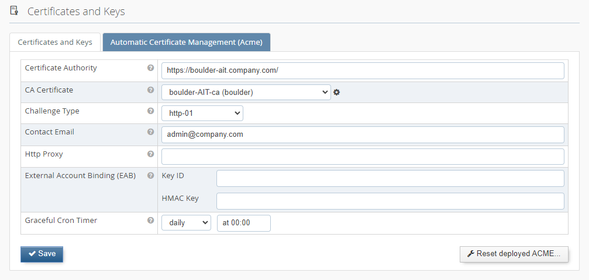
The CA Certificate is used to validate the certificate of the CA URL endpoint. For "Let’s Encrypt™" the validation certificate is available by default. If you are using another CA, then please upload the corresponding CA certificate for validation under "Certificate and keys" and select it in the dropdown list.
There are two supported types of ACME challenge used to prove domain ownership. If "http-01" is selected, the SES must be reachable from the Internet on port 80.
Renewed certificates are not automatically active and the WAF must do a graceful restart first. The "Graceful cron time" defines a time schedule when the WAF HTS is automatically gracefully restarted. It is recommended to choose a regular frequency (e.g. once a day or once a week).
The other option is to disable the automatically restart, but then the graceful restart must be triggered manually as soon as new certificates are available.
In a HA Active/Active setup it’s important that only one cluster node triggers the renewal process. The "Master ACME Node" flag indicates which node carries the responsibility for this. As the renewal process happens early enough before the certificate expiry, it’s also not a problem it the selected master node is not available during a short period in time due to maintenance or failure and the flag must not necessarily be changed. Should the master node be offline for a long period of time, the fallback process on the second node will try to renew the certificates at a later stage.
To enable ACME on a vhost you must select the checkbox "Automatic certificate management (ACME)" Vhost→SSL→SSL Certificate
* 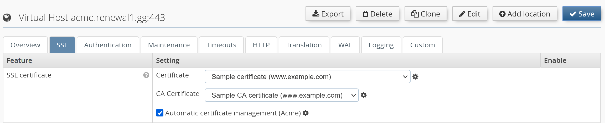
It’s possible to define specific certificates from the drop-down list in combination with ACME. The certificates are used till the ACME process for the vhost is finished and graceful restart is completed.
If no certificate is selected, the ACME module will use automatically generated fallback certificates. Until the ACME process is finished, and a graceful restart was triggered, the access to this vhost is blocked with a 503 HTTP response code.
The USP Secure Entry Server® appliance uses its own user management. For each operator, an individual user account should be added for auditing changes done in the configuration.
Only a user with administration role can add, edit or delete users. The user management is located under Administration→Users. Each user can change its password and some other user details by opening the Account view - the link is located next to the Log out button.
The user management is not included in the configuration lifecycle, reloading an old configuration will not restore old user account or passwords. However, the user accounts are included in the full system backup. After restoring an old backup, the old user accounts and passwords are active.
A user can be set to status inactive, disallowing logins until the user is reactivated again.
There are four different roles:
Table 6.1. User role permissions
| Permission | Administrator | Configurator | Deployer | Viewer |
|---|---|---|---|---|
View dashboard | ||||
View configuration | ||||
Change and save configuration | ||||
Commit configuration | ||||
Activate configuration | ||||
View and edit users | ||||
Appliance control actions | ||||
Invoke appliance update | ||||
View and download logs | ||||
View events | ||||
View traffic analyzer | ||||
Use SLS Data Protector | ||||
Use connectivity check |
There are two types of configuration backups. They differ in the files included in the backup archive:
A configuration export will provide a tar archive for downloading. The default file name contains prefix "sesconfig" with the hostname and the date. The archive can be downloaded in the Administration GUI Configuration→Manage and Deploy→Import/Export by pressing the Export button.
The import can be initiated in the same view as the export. After importing the archive the configuration is marked as "uncommitted" and must be committed and activated to apply the changes.
A system backup will provide a tar archive for downloading. The default file name contains prefix "sesbackup" with the hostname and the date. The archive can be downloaded in the Administration GUI Configuration→Manage and Deploy→Import/Export pressing the Backup button. This action is only available for users with administration privileges.
A system recovery process includes the following steps:
Backup archives can be automatically pushed to a remote server, either on a daily or weekly basis, or based on a custom schedule. If the "custom" scheduling option is selected, the backup interval must be configured with the common CRON job syntax in the text input field. The backup files are copied using the SCP protocol.
Automatic backup can be enabled by configuring the remote backup server in the Remote Backup tab under Configuration→System Settings→Network Settings:
After activating the modified configuration, a SSH public key will be presented in Configuration→Manage and Deploy→Import/Export→Remote Backup. This key must be registered on the remote backup server so that logins using public/private keys are possible. If using OpenSSH, the key must be added to the file ~/.ssh/authorized_keys. Set the permissions of the ~/.ssh directory and its containing files so that they may be only accessed by the current user.
Click on the button Execute to manually start the backup process, and verify that the backup is copied to the remote backup server.
United Security Providers AG publishes regularly software updates for the USP Secure Entry Server®. This so called update image can be downloaded from the customer portal.
United Security Providers AG recommends to keep the USP Secure Entry Server® always up to date!
It is advised to create a full system backup before installing a new appliance release.
The update file must be downloaded to the operator machine and can then be applied using the Administration GUI. In the screen Administration→Software Update, the file can be selected and uploaded using the Import button. After the upload is completed, a new button Install & Reboot appears. Clicking on this button will actually install the new USP Secure Entry Server® release. To complete the installation, the appliance will reboot automatically.
The update can apply automatic configuration updates, which will also automatically be committed, but not activated. Therefore, after the appliance has restarted, the updated configuration must always be manually activated.
Some updates need manual configuration changes by the operator. Such changes are generally documented in the migration guides provided with the new release.
Should the update process fail under any unforeseen circumstances and access to the Administration GUI can not be restored, the appliance must be reinstalled with the previous USP Secure Entry Server® version and the system configuration must be restored using the system recovery process.
The log files are crucial for analyzing any problems or incidents. Depending on the load which is processed by the USP Secure Entry Server® the log file can grow very big. As the disk space is limited the log files must be properly managed.
The log management is located under Configuration→System Settings→Log Management.
The Web Application Firewall log are kept several days. The number of days how long the log files should be kept can be defined here. The log files are rotated daily.
The advanced log management allows to aggregate log data from different sources with the Log Viewer and can make it easier to locate problems in the overall processing chain.
High values are not recommended, as disk storage on the system has limited capacity and, depending on web traffic, the amount of log information will exceed the disk storage capacity rather quickly. If available disk storage drops below as certain value, old log information will be automatically removed to prevent the system to prematurely run out of disk storage. Nevertheless, up-to-date log information will still be available.
When disabling this feature completely, the possibility to aggregate the log data is lost. The components will only write the normal log files.
Log messages from the WAF and Authentication Service can be forwarded to an external SIEM infrastructure or syslog server over UDP or TCP.
To configure a remote syslog server, go to Configuration→System Settings→Network Settings→Monitoring/Alerting→Syslog Server and enter the IP address, gateway, port and select the protocol to be used. It’s possible to select between four different formats, how the message are forwarded:
Native logfile forwarding
For Syslog servers having Native Logfiles output format selected, it’s must be configured which logs will be forwarded for each component:
Secure log message forwarding with SSL/TLS
Log messages can be transported securely using SSL/TLS. In the Syslog Server settings panel, select TLS in the list of protocols. Click on the Manage certificates icon to go to the Certificates and keys screen, where you can upload your SSL/TLS CA certificate for the selected syslog server. For proper validation of the server certificate, ensure that the subject alternative name field includes the IP address of the syslog server.
A client certificate & private key pair can be uploaded and specified Syslog Server settings panel if the server requires client authentication.
Analytics→Log Viewer is only accessible when Advanced Log Management is enabled. This log viewer will allow to aggregate the different log sources and provides an extended search and filter mechanism.
Consult the context help in the Web GUI for details how the different filter and search mechanism are working.
Alternative Log Viewer
When the Advanced Log Management is disabled, an alternative view exists to analyze the log files. In Analytics→Log Download each log file can be viewed separately by clicking . Basic filtering is possible, but only the log entries of the current log rotation generation can be viewed.
The traffic analyzer is used for debugging purposes when integrating new applications. It records detailed request and response data during different processing steps.
This feature must not be enabled on a productive server since it can record clear text user authentication data. In addition, it generates high data volume which can fill up the hard disk of the system.
Configuration
This feature can be enabled on virtual host level in the tab Logging. By specifying a certain URL path, an client IP address or a specific user-agent regular expression pattern, only matching requests will be captured. This will limit the amount of recorded data and will simplify the analysis.
Analysis
The captured request data can be analyzed with the build in Traffic Analyzer found under Analytics→Traffic Analyzer.
The Dashboard provides an overview of the usage of system resources like CPU usage, memory, swap and disk space. Clicking on the System menu item in the navigation opens a screen containing time-based charts of the system resource usage, as well as network and disk performance.
The USP Secure Entry Server® features a local SNMP service which can be accessed by external monitoring solutions to obtain system status, configuration and health information.
The local SNMP service can be configured by navigating to Configuration→System Settings→Network Settings→Monitoring/Alerting→Local SNMPD Server. Entering a community string and activating the configuration will enable the SNMP service, which can be accessed on port 161 using SNMP protocol version 2c.
In addition to the standard MIB-2 information, it is possible to query USP Secure Entry Server® specific information like virtual host usage, component service status, appliance release or system health information. You can download the related MIB files by clicking the Get MIB button in the Network Settings screen.
If the monitoring system detects an event (for example, an unexpected stop of a service, memory or hard disk filling up, errors reported by the WAF or Authentication Service), it can inform the operator by sending an SNMP trap message to a monitoring system which supports receiving SNMP traps.
SNMP trap receivers can be configured by navigating to Configuration→System Settings→Network Settings→Monitoring/Alerting→SNMP Server. Adding multiple SNMP servers, with individual community strings, is possible.
The structure of the SNMP trap message is defined in the USP-SES-TRAP-MIB file, which can be downloaded by clicking the Get MIB button in the Network Settings screen.
The Dashboard shows current and long term statistic data. The data of the last hour or up to the last year can be shown.
Besides selecting the period it is also possible to drill down into the different virtual hosts and the different locations for the long term statistic charts.
For details about the different charts see the context help in the Web GUI.
The various components of the USP Secure Entry Server® generate events. These events provide consistent, uniformly structured information related to monitoring the status of various components and services in all USP products. With this structured information, a user is able to perform meaningful analysis of issues of any kind (using drill-down or statistical methods).
The event viewer (Analytics→Events) is a flexible tool to analyze various occurred events on the USP Secure Entry Server®. Events keep track of relevant security issues like "Suspicious Access Attempt" and operational issues like "Available disk space is running low.". For a complete list of all Events consult the USP Event Documentation.
The event viewer offers several predefined views for a quick access to important events. Note that some views are only available with the appropriate license!
Filters will help you narrow the events list down. Note that only the latest 500 events will be displayed in the table. If the wanted events are not within this batch, you must refine your filter criteria. Available filters can be added either by choosing the desired criteria from the dropdown menu or by right-clicking on any column in the event view and selecting the menu item "Set as filter". Using the context menu will reset any previously selected filter of the same type to the exact selected value. To remove it, click on the remove-icon (x) of a criteria field. To change a criteria value click on the value of a criteria field.
Events can be forwarded to a syslog server or SIEM solution using the Remote Syslog Server configuration (Configuration→System Settings→Network Settings). This works the same way as forwarding WAF or Authentication Service logs. Tick the event forwarding checkbox(es) in the Remote Syslog Server configuration panel to enable event forwarding.